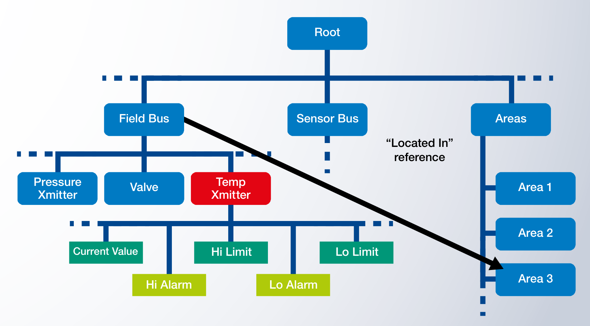

Information Model
สิ่งที่ทำให้ OPC UA ต่างจาก Modbus มากที่สุด คือข้อมูลไม่ใช่แค่ตัวเลขดิบ แต่เป็น Object ที่มีชื่อ ประเภท หน่วย ความสัมพันธ์ — เหมือนกับมองโลกผ่านสายตา OOP บทนี้พาทำความรู้จัก Address Space และวิธีที่ Client ค้นเจอข้อมูลได้เอง
เปรียบเทียบกับ Modbus ก่อน
ลองจินตนาการเซ็นเซอร์อุณหภูมิตัวหนึ่ง ที่อยู่บน Field Bus ของโรงงาน ค่าปัจจุบันคือ 23.5°C มี Hi Limit ที่ 80°C และ Lo Limit ที่ -10°C
ใน Modbus
// คุณต้องเปิด Manual ของเซ็นเซอร์อ่านก่อนว่า:
// Register 40001 = Current Temperature × 10 (signed int16)
// Register 40002 = Hi Limit × 10
// Register 40003 = Lo Limit × 10
// Register 40004 = Status Bits
// แล้วเขียน Code อ่านเอง:
int raw = readRegister(slaveId=5, addr=40001);
float temperature = raw / 10.0; // หน่วยอะไร? °C? °F? — ก็ต้องดู Manualปัญหา: ความรู้ เกี่ยวกับเซ็นเซอร์อยู่ใน Manual กระดาษ ของเซ็นเซอร์ ถ้าคุณเปลี่ยนยี่ห้อ — Register Map เปลี่ยน, Scaling เปลี่ยน, ต้องเปิด Manual ใหม่และเขียน Code ใหม่
ใน OPC UA
// ทุกอย่างฝังอยู่ใน Server เลย — Client แค่ Browse:
Server: opc.tcp://plant-floor:4840
└─ FieldBus
└─ TempXmitter
├─ CurrentValue (Double, EngineeringUnits="°C", Range=-50..150)
├─ HiLimit (Double, EngineeringUnits="°C")
├─ LoLimit (Double, EngineeringUnits="°C")
├─ HiAlarm (Event, AcknowledgementRequired)
└─ LoAlarm (Event, AcknowledgementRequired)Client ไม่ต้องรู้อะไรล่วงหน้า — เปิดเข้ามา Browse ก็เห็นทุกอย่าง พร้อมประเภท หน่วย และความสัมพันธ์
Address Space — โลกของ Nodes
OPC UA Server เก็บข้อมูลทั้งหมดในรูปของ Address Space — ลองนึกภาพต้นไม้หรือ Graph ที่แต่ละจุดเรียกว่า Node เชื่อมต่อกันด้วย Reference

ประเภทของ Node
| NodeClass | คืออะไร | ตัวอย่าง |
|---|---|---|
| Object | สิ่งของในโลกจริง — มีลูกหลานเป็น Variable, Method, Event | TempXmitter, Motor, Valve, ProductionLine |
| Variable | ค่าที่อ่าน/เขียนได้ | CurrentValue, HiLimit, ProductCount |
| Method | ฟังก์ชันที่ Client เรียกได้ | Start(), Stop(), Calibrate(targetTemp) |
| Event | เหตุการณ์ที่เกิดขึ้น Server แจ้ง | HiAlarm, MaintenanceRequired, JobCompleted |
| ObjectType / VariableType | "แม่แบบ" ของ Object/Variable | TemperatureSensorType, AnalogVariableType |
| ReferenceType | นิยามความสัมพันธ์ระหว่าง Node | HasComponent, Organizes, HasTypeDefinition |
| View | มุมมองส่วนหนึ่งของ Address Space | EngineerView, OperatorView |
Attributes — ทุก Node มีคุณสมบัติพื้นฐาน
ทุก Node ใน Address Space มี Attributes มาตรฐาน (เหมือนกันทุกตัว) — ต่างจากค่า เนื้อหา ที่เก็บอยู่ใน Node ตัวนั้นๆ:
// Attributes ที่ทุก Node ต้องมี:
NodeId → identifier ไม่ซ้ำในทั้ง Server (เช่น "ns=2;s=TempXmitter1")
NodeClass → Object / Variable / Method / Event / …
BrowseName → ชื่อที่ใช้ Browse (มี Namespace)
DisplayName → ชื่อที่ใช้แสดง (มีหลายภาษาได้!)
Description → คำอธิบาย (มีหลายภาษาได้!)
// เพิ่มเติมสำหรับ Variable:
Value → ค่าปัจจุบัน
DataType → Boolean / Int32 / Double / String / DateTime / …
ValueRank → Scalar / Array / Matrix
AccessLevel → Read / Write / HistoryRead / HistoryWrite
MinimumSampling → ความถี่ที่ Server อัปเดตค่า
// เพิ่มเติมสำหรับ Method:
Executable → true/false
UserExecutable → ขึ้นกับสิทธิ์ UserTypes & Instances — แบบเดียวกับ OOP
OPC UA Address Space แยกระหว่าง Type Space (แม่แบบ) และ Instance Space (ตัวจริง) — เหมือนกับ Class กับ Object ใน Java/C++/Python:
// Type Space — นิยามว่า "Temperature Sensor หน้าตาแบบไหน"
TemperatureSensorType
├─ CurrentValue : Double (EngineeringUnits = °C)
├─ HiLimit : Double (EngineeringUnits = °C)
├─ LoLimit : Double (EngineeringUnits = °C)
├─ HiAlarm : Event
├─ LoAlarm : Event
└─ Calibrate() : Method (Input: targetTemp)
// Instance Space — ตัวจริงในโรงงาน
TempXmitter1 : TemperatureSensorType ← HasTypeDefinition
├─ CurrentValue = 23.5
├─ HiLimit = 80.0
└─ ...
TempXmitter2 : TemperatureSensorType
├─ CurrentValue = 76.2
└─ ...ทำไมแยก? เพื่อให้ Client เขียนครั้งเดียว ใช้กับทุกตัว ที่เป็น Type เดียวกัน — ถ้าคุณเขียน Code อ่าน CurrentValue จาก TemperatureSensorType ได้ ก็จะอ่านได้จากทุก Instance ของ TemperatureSensorType ใน Server ทุกตัวทั่วโลก
Inheritance — Type สืบทอดได้
BaseObjectType
└─ DeviceType
└─ TemperatureSensorType
└─ HighAccuracyTemperatureSensorType (เพิ่ม CalibrationDate)
Client ที่รู้จักแค่ TemperatureSensorType ก็ใช้กับ HighAccuracyTemperatureSensorType
ได้ — แค่ไม่เห็น CalibrationDate ฟิลด์ใหม่ (Polymorphism)
References — ความสัมพันธ์ระหว่าง Node
Node ไม่ใช่แค่อยู่เป็นต้นไม้ — เชื่อมโยงกันด้วย Reference ที่มีความหมายต่างๆ:
| Reference | ความหมาย |
|---|---|
HasComponent |
Object มี Variable/Method ลูกอยู่ข้างใน (เช่น TempXmitter มี CurrentValue เป็น Component) |
HasTypeDefinition |
Instance เป็น Type นี้ (เช่น TempXmitter1 → TemperatureSensorType) |
HasSubtype |
Type สืบทอดจาก Type อื่น |
Organizes |
Folder จัดกลุ่ม (โครงสร้างลำดับชั้น ไม่ใช่ Composition) |
HasProperty |
Variable มี Metadata เพิ่มเติม (เช่น EngineeringUnits, EURange) |
HasEventSource |
Object นี้เป็นแหล่งของ Event |
ในรูป Address Space ข้างต้น — ลูกศรจาก TempXmitter ไปที่ Area 3
คือ Reference แบบ "Located In" — บอกว่าเซ็นเซอร์ตัวนี้ อยู่ในพื้นที่ Area 3 ของโรงงาน
(Custom Reference Type ที่ Companion Specification กำหนด)
Namespaces — กันชนชื่อ
ใน Server หนึ่งอาจมี Node จากหลายที่มา — Core Spec ของ OPC Foundation, Companion Spec ของอุตสาหกรรม, Custom ของผู้ผลิตเครื่อง, Application ของ End User
เพื่อกัน ชื่อชน OPC UA ใช้ Namespace:
NodeId แบบเต็ม: ns=2;s=TempXmitter1
↑ ↑
│ └─ Identifier ภายใน Namespace นี้
└─ Namespace Index
Namespaces ใน Server ปกติ:
ns=0 : http://opcfoundation.org/UA/ ← Core
ns=1 : urn:plant-floor:opcuaserver ← Server ของคุณเอง
ns=2 : http://opcfoundation.org/UA/DI/ ← Devices Companion Spec
ns=3 : http://schneider-electric.com/UA/PM/ ← Vendor-specific
ns=4 : urn:my-factory:line-A ← Application-specificBrowsing — Client ค้นทุกอย่างได้เอง
เพราะ Address Space มีโครงสร้างแบบนี้ Client เปิดเข้า Server แล้วเรียก Browse(rootNode)
ก็จะได้รายการ Node ลูกทั้งหมด พร้อม Reference ที่เชื่อมต่อ — เดินตามทุก Reference ก็จะได้แผนที่ทั้ง Server
นี่คือเหตุผลที่ Tool อย่าง UaExpert (ในบทที่ 10) แค่ใส่ URL ก็เห็น tree ทั้งหมดทันที — ไม่ต้องเปิด Manual
// Pseudocode ของ Browse:
nodes_to_visit = [RootNode]
while nodes_to_visit:
node = nodes_to_visit.pop()
references = browse(node)
for ref in references:
print(f"{ref.type} → {ref.target.browseName}")
if ref.type == "HasComponent" or ref.type == "Organizes":
nodes_to_visit.append(ref.target)Plug-and-Produce — ทำไมถึงสำคัญ
OPC UA Address Space ออกแบบมาเพื่อ Plug-and-Produce — เสียบเครื่องใหม่เข้าโรงงาน ก็ใช้งานได้เลยโดย ไม่ต้องตั้งค่าล่วงหน้า
เพราะ Server แต่ละตัวมาพร้อมกับ:
- ข้อมูล (Instances)
- ประเภทของข้อมูล (Types) — แม้แต่ Type ที่ Client ยังไม่เคยรู้จักมาก่อน
- วิธีค้นหา (Browse Services)
Client ที่เปิดเข้ามาใหม่ — ใช้ Browse ค้น, ดู HasTypeDefinition ของแต่ละ Instance, ตามไปดู Type Definition ก็จะรู้ทุกอย่างที่ต้องการเพื่อเริ่มทำงาน
สรุปบทที่ 03
- OPC UA เก็บข้อมูลทั้งหมดในรูปของ Address Space ซึ่งเป็น เครือข่ายของ Node
- มี Node 7 ประเภท: Object, Variable, Method, Event, ObjectType, VariableType, ReferenceType
- ทุก Node มี Attributes มาตรฐาน เช่น NodeId, BrowseName, DisplayName (รองรับหลายภาษา!)
- มีระบบ Type / Instance เหมือน OOP — รวมทั้ง Inheritance
- มี Namespace กันชื่อชน — Core, Companion, Vendor, Application อยู่ใน Server เดียวกันได้
- Client Browse ค้นทุกอย่างได้เอง — รากฐานของ Plug-and-Produce
บทต่อไปจะดู Services — บริการที่ Client ใช้คุยกับ Server: Read, Write, Subscribe, Call Method, Browse, …